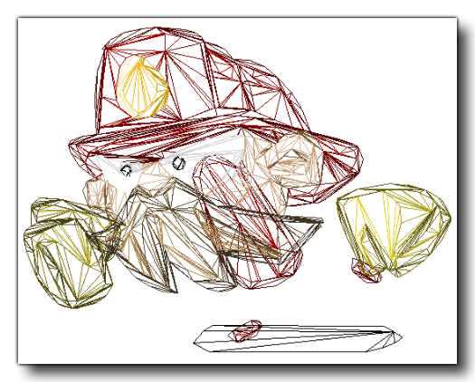
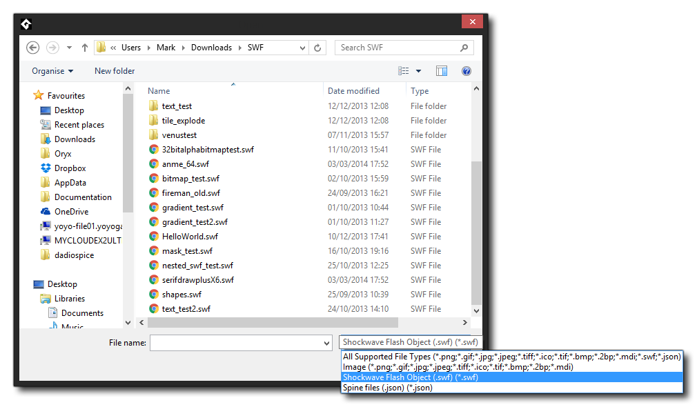
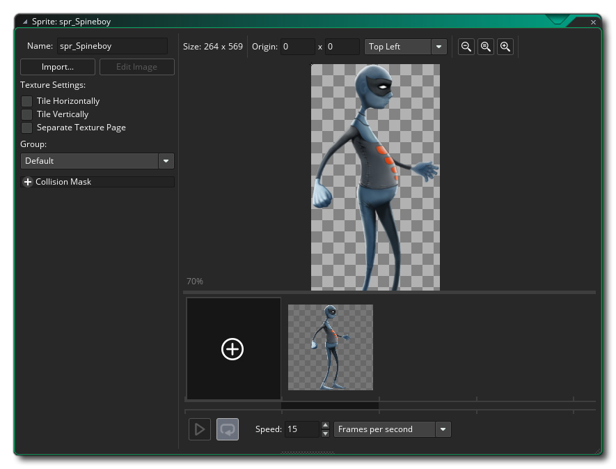

GameMaker Studio 2 prend en charge les sprites non bitmap sous la forme de fichiers SWF vectoriels ou de fichiers Spine Skeletal Animation. Ces deux formats ont leurs avantages et leurs inconvénients, et les deux sections ci-dessous expliquent comment les importer dans Sprite Editor, ainsi que quelques informations sur la manière dont ils sont rendus.
GameMaker Studio 2 prend pas en charge les sprites vectoriels. Généralement, tous les sprites de GameMaker utilisent des bitmaps qui, bien que flexibles en termes de contenu, limitent la taille et le nombre d'images possibles dans un sprite avant que l'utilisation de la mémoire ne devienne prohibitive. Les sprites vectoriels contournent ces limitations en stockant et en dessinant leur contenu différemment - au lieu d'une grille de pixels, qui peut devenir bloc ou floue une fois redimensionnée, ils sont dessinés sous forme de triangles pouvant être redimensionnés sans perdre la définition, comme illustré dans l'image ci-dessous.:
Pour vous aider à visualiser comment cela est fait, l'image ci-dessous est du même vecteur Fireman sprite. Nous pouvons maintenant voir les polygones utilisés pour créer l'image dans GameMaker Studio 2: 
Cependant, rien n’est jamais gratuit en matière de programmation de jeux et le compromis avec les sprites vectoriels est qu’ils coûtent plus cher à dessiner que les sprites bitmap et que cette différence de vitesse augmente à mesure que la complexité de l’animation importée augmente. En outre, leur utilisation de la mémoire est affectée par leur complexité visuelle, contrairement aux sprites bitmap. En gardant cela à l’esprit, ils permettent d’ajouter de grands graphiques animés d’une manière qui serait impossible avec les sprites traditionnels bitmap.
Sur le revers de l'équation de la performance, étant donné que les images-objets vectorielles ne dessinent que les pixels indispensables (contrairement aux images-objets bitmap qui dessinent également l'espace vide autour de l'image), elles peuvent être moins chères du point de vue d'un GPU. De plus, en général, les images-objets vectorielles sont beaucoup plus petites que leurs équivalents bitmap - pour l'exemple de pompier ci-dessus, les tailles des différents types d'images-objets sont les suivantes:
Bitmap at 70x68 = 4x70x68 bytes x 12 frames = 223k
Vector = 54kSi vous quadruplez la résolution du sprite:
Bitmap at 280x272 = 4x280x272 bytes x 12 frames = 3570k
Vector = 54kComme vous pouvez le constater, vous pouvez potentiellement économiser beaucoup de mémoire en utilisant des sprites vectoriels et nous avons encore beaucoup de potentiel pour des économies d'espace futures.
Actuellement, GameMaker Studio 2 ne peut importer que des images vectorielles à partir de fichiers au format SWF, et la manière de les importer dans le programme est presque identique à celle utilisée pour ajouter une image bitmap normale. Pour ajouter une image-objet vectorielle, créez une nouvelle image-objet, ce qui ouvrira la boîte de dialogue standard Charger une image-objet, mais assurez-vous d'avoir sélectionné *.swf dans le filtre de fichier situé en bas. 
Le fait de cliquer sur le bouton "Charger" ajoutera l'image vectorielle ou l'animation à l'arborescence des ressources, une barre de progression s'affichant lors du traitement du fichier. Notez que, selon la complexité du fichier, cela peut prendre un certain temps (jusqu'à une minute pour les animations plus complexes). Une fois le traitement terminé, vous revenez à la boîte de dialogue des propriétés de l’image-objet, qui se présentera ainsi:
Comme vous pouvez le voir, cela ressemble au dialogue de sprite normal, avec la première image du fichier vectoriel affichée dans la fenêtre d'aperçu de l'image de droite. Il y a cependant quelques changements par rapport à un dialogue de sprite normal. Premièrement, le bouton Modifier l'image-objet a disparu, car il n'y a pas de bitmap à modifier dans ce type d'image-objet, et deuxièmement, un nouveau bouton Afficher l'image- objet a été ajouté. Ce bouton ouvre le fichier vectoriel quelle que soit l'application qui lui est associée. Votre navigateur Web est normalement utilisé par défaut, mais si aucun programme n'est associé au fichier, rien ne se passera et le bouton est désactivé (vous pouvez le résoudre en ouvrant l' Explorateur Windows et en cliquant avec le bouton droit sur un fichier vectoriel, puis en utilisant " open with " pour choisir le programme à associer à ces fichiers). Vous pouvez également associer une visionneuse à ces GameMaker Studio 2 dans la section Préférences générales - Chemins de GameMaker Studio 2 et le bouton Afficher une image -objet l'ouvrira à la place de la visionneuse par défaut.
REMARQUE: l'apparence de l'image dans l'éditeur de prévisualisation choisi ne sera pas la même que celle de votre jeu, ni dans la fenêtre de prévisualisation de l'éditeur de sprite. L'image vectorielle sera importée à la taille à laquelle elle a été créée, ce qui n'est pas nécessairement la taille à laquelle l'aperçu est affiché (les navigateurs redimensionneront normalement l'image pour l'adapter, par exemple).Vous pouvez également définir la qualité de l'image-objet vectorielle une fois dessinée. Cela réduira ou augmentera simplement le nombre de triangles utilisés pour générer l’image-objet, la valeur de qualité par défaut de 50 étant normalement suffisante pour la plupart des jeux. Vous devez toutefois essayer cette valeur si vous utilisez une mise à l’échelle extrême ou rencontrez des problèmes de performances. À partir de ce moment, les autres parties de l'éditeur doivent fonctionner de la même manière que pour les images-objets bitmap.
Vous devez prendre en compte un certain nombre d'éléments avant d'importer des sprites vectoriels, le plus important étant que certaines fonctions de dessin et de gestion des sprites ne sont pas prises en charge pour des raisons techniques, notamment les fonctions de dessin ne dessinant qu'une partie d'un sprite., ou qui "biaisent" la position d’une certaine manière (voir les fonctions individuelles draw_sprite _ * () pour plus de détails). Cependant, les fonctions de dessin de sprite de base sont entièrement prises en charge, tout comme les variables de sprite intégrées. Vous pouvez également définir différentes valeurs d' anti-aliasing (AA) pour les images-objets SWF en cours de dessin, à l'aide des fonctions décrites ici: Dessin des images-objets et des tuiles.
Vous devez également être conscient de ce qui suit:
- Actionscript n'est pas pris en charge lors de l'importation d'un fichier *.SWF. Par conséquent, si votre fichier SWF s'appuie dessus pour fonctionner correctement, il ne fonctionnera probablement pas correctement. De même, tous les clips vidéo incorporés ayant leur propre scénario ne verront apparaître que leur première image tout au long de l'animation - toutes les animations doivent figurer sur le scénario principal.
- Si votre fichier vectoriel contient des détails particulièrement fins, vous remarquerez parfois que des trous ou des triangles étranges apparaissent dans les images-objets résultantes. En effet, à petite échelle, la géométrie peut parfois s’effondrer pour créer des formes qui ne triangulent pas bien. Dans ce cas, vous avez deux options: vous pouvez agrandir le contenu du fichier vectoriel, ce qui laissera plus de place à l'importateur pour l'importateur, ou vous pouvez essayer de réduire le niveau de détail de l'objet brisé.
- GameMaker Studio 2 utilise la taille de la scène du GameMaker Studio 2 SWF en tant que limite de l'image-objet résultante. Cependant, si vous avez quelque chose sur la scène en dehors de ces limites, il est toujours tracé. Cela signifie que vous devez soit essayer d'éviter de placer quoi que ce soit en dehors des limites de votre scène si vous ne voulez pas qu'il soit affiché, soit utiliser un calque de masque pour limiter le dessin à cette zone.
- La taille de la scène a également une incidence sur la taille des masques de collision générés. Par conséquent, si vous avez une grande taille de scène et de nombreuses images dans votre animation, vous risquez de perdre beaucoup de mémoire. Utilisez donc uniquement des masques de collision précis si vous en avez vraiment besoin.
- Comme un fichier SWF est créé à partir de plusieurs calques, dont certains peuvent se chevaucher, alpha ne fonctionne pas exactement comme avec les images-objets bitmap. Les zones superposées ne seront pas aussi transparentes que les autres parties de l'image-objet, car les pixels existants tiré sur plusieurs fois.
- Les remplissages bitmap sont pris en charge. Toutefois, si vous utilisez des remplissages bitmap en mosaïque dans votre fichier SWF, vous devez vous assurer que la taille de la bitmap est deux fois plus grande, sinon le mosaïque ne fonctionnera pas correctement. Le rendu de texte est également pris en charge, mais vous devez incorporer la police dans votre fichier SWF pour qu'elle apparaisse dans l'image-objet résultante. De plus, seul le texte à une ligne aligné à gauche est actuellement pris en charge.
Une image-objet créée à l'aide d'une animation squelettique est une image dans laquelle un "squelette" de base a été créé et animé à l'aide d' images-clés afin de déplacer les composants du squelette au fil du temps. Ce squelette est ensuite traité à partir d'un atlas de texture et l'animation résultante est exportée dans l'un des nombreux types de fichiers. Gamemaker: Studio vous permet d'importer ce type de sprite tant qu'il a été exporté en tant que *.json fichier de formatage et possède le fichier d’atlas de texture correctement associé ( *.atlas ) et un fichier image (en tant que *.png ) dans le même répertoire.
IMPORTANT: GameMaker Studio 2 ne prend en charge qu'un seul atlas de texture par sprite.REMARQUE: Cette fonctionnalité ne prend actuellement en charge que les fichiers créés à l'aide du programme Spine.Actuellement, GameMaker Studio 2 ne peut importer que des images vectorielles à partir de fichiers au format JSON créés par le programme Spine. Toutefois, la manière de les importer dans le programme est presque identique à celle utilisée pour ajouter une image bitmap normale. Pour ajouter une animation squelettique, vous devez créer un nouveau sprite, qui ouvrira la boîte de dialogue standard Charger un sprite, mais assurez-vous que vous avez sélectionné *.json du filtre de fichier en bas.
Si vous cliquez sur le bouton "Charger", l'animation squelettique sera ajoutée à l'arborescence des ressources en tant qu'image-objet, une barre de progression s'affichant lors du traitement du fichier. Notez que, selon la complexité du fichier, cela peut prendre un moment ou deux. Une fois le traitement terminé, vous revenez à la boîte de dialogue des propriétés de l’image-objet, qui se présentera ainsi: 
Une fois que vous avez importé l'animation, vous pouvez définir les propriétés de collision, mais notez que vous ne pouvez utiliser que des collisions précises ou des collisions de boîtes englobantes et que les données de collision pour une animation squelettique sont explicitement extraites des données fournies. GameMaker Studio 2 ne génère pas de masque de collision si les données du fichier importé sont manquantes, ce qui signifie que vous ne rencontrerez tout simplement pas de collisions de travail si les masques ne sont pas correctement définis dans le programme utilisé pour créer l'image à importer.
REMARQUE: en raison de la complexité des animations squelettiques, l'image d'aperçu affichée dans l'éditeur de sprite n'a pas pour but de représenter votre animation avec précision, mais vous donne plutôt une image simple qui représente l'animation à visualiser dans l'éditeur de salle.Contrairement aux GameMaker - GameMaker bitmap, l'image-objet d'animation squelettique importée ne peut en aucun cas être modifiée dans l'éditeur, mais un certain nombre de fonctions disponibles dans le langage GameMaker (GML) peuvent être utilisées pour modifier les apparences, définir les propriétés et contrôler d'autres aspects de l'animation.
Vous devez prendre en compte un certain nombre d'éléments avant d'importer des sprites d'animation squelette, le plus important étant que certaines fonctions de dessin et de gestion des sprites ne sont pas prises en charge pour des raisons techniques, en particulier les fonctions de dessin ne dessinant qu'une partie d'un objet. sprite, ou qui "incline" la position d’une manière ou d’une autre (voir les fonctions individuelles draw_sprite _ * () pour plus de détails). Cependant, les fonctions de dessin de sprite de base sont entièrement prises en charge, tout comme les variables de sprite intégrées. Outre ces fonctions et variables, vous pouvez également définir et modifier les propriétés d’une animation à l’aide de fonctions spéciales. skeleton_* fonctions, qui sont énumérées et expliquées dans la section de référence sur les animations squelettiques.